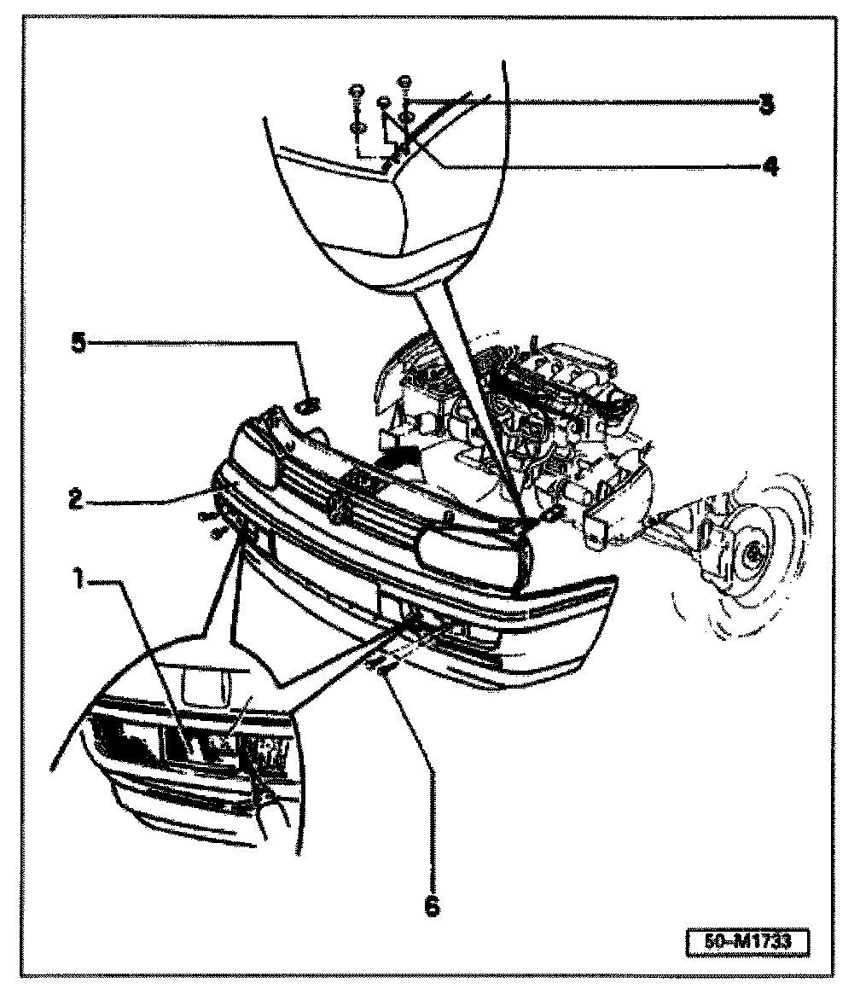

Radiator Support: Service and Repair
Body, front
Lock carrier with attachments, removing and installing

1 - Cover/towing eye
Removing: Swing toward front using suitable tool and detach from turn signal/holder
2 - Lock carrier with attachments
Must be installed free of stress
3 - Screw
5 Nm ±0.5 Nm (44 ±4 in lb)
4 - Screw
3 Nm ±0.5 Nm (27 ±4 in lb)
5 - Speed nut
6 - Hex bolt
23 Nm (17 ft lb)
Removing
- Remove upper and lower air deflectors.
- Loosen air guides near wheelhousing liner.
- Disconnect harness
Main engine compartment connector near radiator
Horn connector(s)
Ambient temperature switch -G38- (with multi- function indicator as of m.y. 1996)
- Disconnect hood lock cable.
- Loosen AC refrigerant line and clamps (where applicable).
CAUTION! Disconnect brackets and support points only DO NOT open the air conditioning refrigerant circuit
Installing
- Move lock carrier with attachments towards rear (arrow) as far as possible, tighten screws -3- and -4-.
- Make sure hood opens and closes smoothly, without excessive force.
- Continue installing in reverse order of removal.